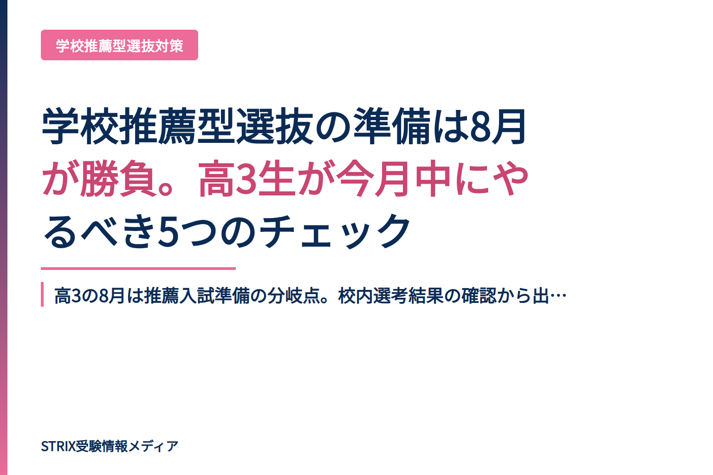
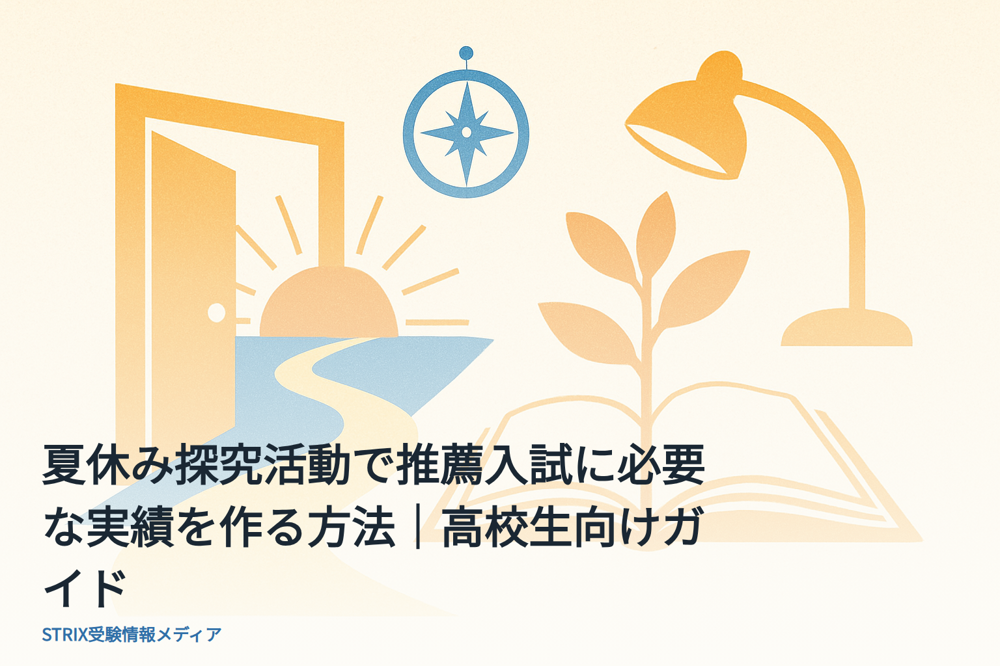
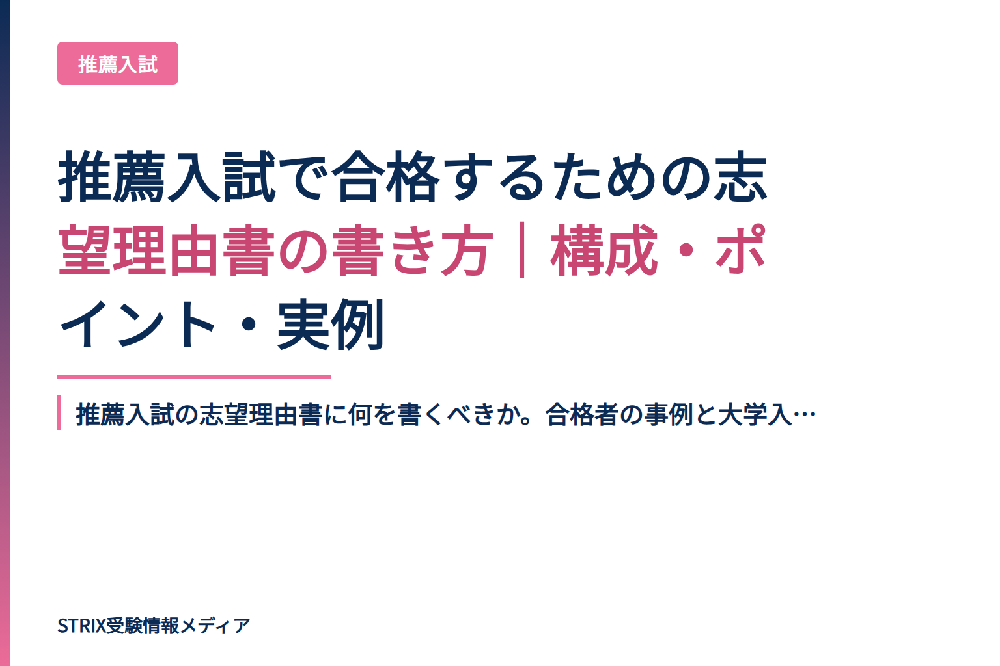
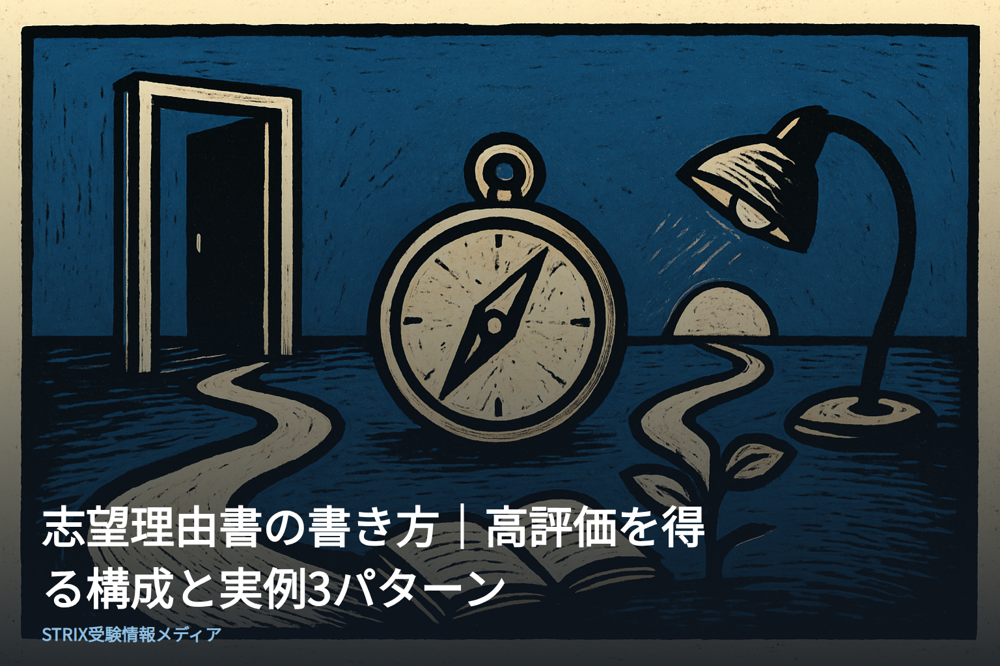
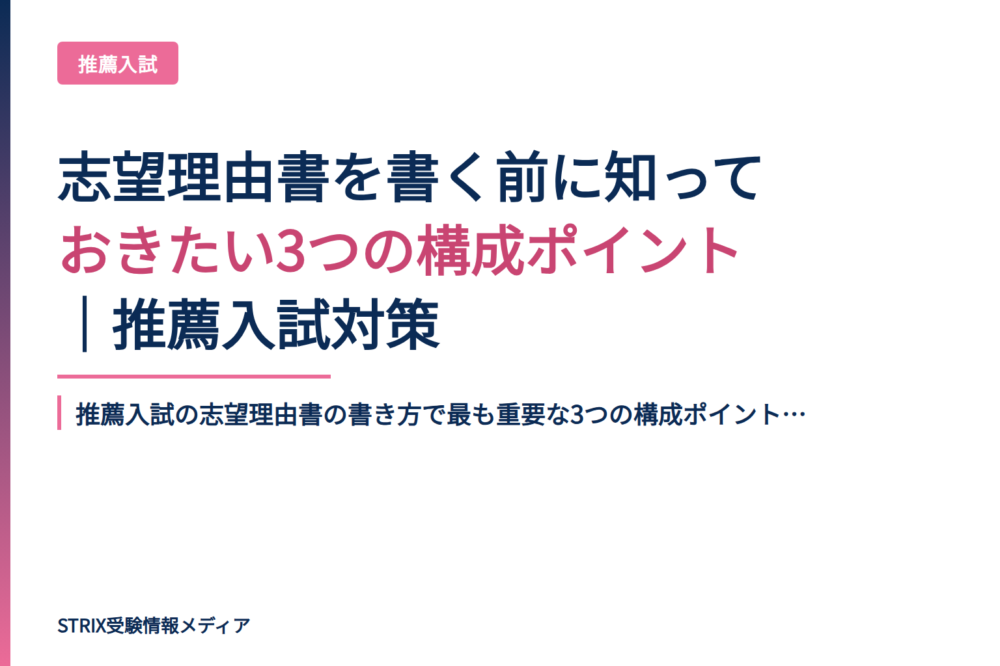

大学受験・入試情報、志望理由書の書き方、面接対策、小論文対策をお届けします。

高3の8月は推薦入試準備の分岐点。校内選考結果の確認から出願書類作成、面接練習まで、この時期にやっておくべき準備を具体的に解説します。
2026-08-08
推薦入試で評価される「実績」の作り方を解説。テーマ選定から成果のまとめ方まで、夏休み中に実践できる5つのステップを具体的に紹介します。主体性・継続性・成長性が評価の鍵。
2026-08-08
推薦入試の志望理由書に何を書くべきか。合格者の事例と大学入試担当者が評価するポイントをまとめました。原体験・深掘り・将来像の3ステップで、矛盾のない志望理由を構成するコツ。
2026-08-08
志望理由書の高評価パターンを、構成テンプレートと実例3つで解説。面接官が見るポイント、失敗例と改善方法まで、受験生・保護者向けの実践的ガイド。
2026-08-08総合型選抜・AO入試の面接試験で頻出の時事ネタ対策。2025年に押さえるべきテーマ、面接での「良い答え」3つのポイント、8月からの実践的な準備方法を解説。秋の推薦入試合格に向けた対策ガイド。
2026-08-08
推薦入試の志望理由書の書き方で最も重要な3つの構成ポイントを解説。審査官に評価される論理的で説得力のある志望理由書の作り方を、具体例を交えて紹介します。
2026-08-08